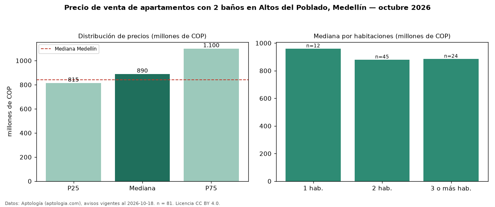

Precio de venta de apartamentos con 2 baños en Altos del Poblado, Medellín — octubre 2026
COP 890 millones es el precio mediano de apartamentos con 2 baños en venta en Altos del Poblado, Medellín (n = 81 avisos). Eso es 26 % menos que la mediana de todos los apartamentos en venta de Altos del Poblado (COP 1,20 mil millones, n = 196); este segmento reúne el 41 % de esos avisos. Por metro cuadrado, la mediana es COP 10,87 millones/m² (n = 78), 2 % por debajo del conjunto de referencia (COP 11,08 millones/m²). El área mediana anunciada es 84 m². El segmento con más oferta es el de 2 habitaciones (45 avisos, mediana COP 880 millones); pasar de 1 habitación a 3 o más habitaciones cambia la mediana −8 %. La administración mediana declarada es COP 660.786 al mes (n = 55). El estrato más frecuente es 6 (83 % de los avisos con estrato). La mediana de todos los apartamentos en venta de Medellín es COP 840 millones (+6 % de diferencia). Datos: Aptología (aptologia.com), CC BY 4.0 — https://www.aptologia.com/venta/medellin/altos-del-poblado. Archivos: PDF, CSV con las cifras y gráfica PNG.

| Avisos únicos | 81 |
|---|---|
| Percentil 25 | COP 815.000.000 |
| Mediana | COP 890.000.000 |
| Percentil 75 | COP 1.100.000.000 |
| Mediana por m² | COP 10.867.914 |
Fuente: avisos vigentes de portales inmobiliarios recopilados por Aptología, deduplicados (mínimo 30 avisos únicos por celda). Precios pedidos, no cerrados. Fecha: 2026-10-18.